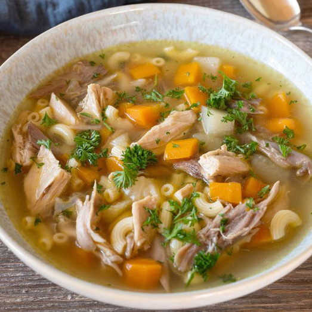
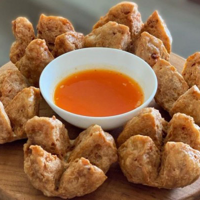

Nasi yang digoreng dengan kecap, saus tiram, potongan daging, telur, sayuran, dan bawang putih
Nasi dengan ayam dan kuah kari rempah khas India
Nasi putih disajikan dengan beragam lauk pauk seperti ayam, daging, sayur, dan sambal
Pada awalnya, warteg kami hanyalah sebuah warung kecil di pinggir jalan yang menjual makanan sederhana. Berkat kelezatan masakan Bu Tsu, pelanggan semakin banyak datang dan warteg pun berkembang pesat
Dengan dedikasi dan kerja keras, warteg berhasil mempertahankan popularitasnya dan menjadi warisan kuliner yang terus dijaga hingga saat ini
Bu Tsu adalah seorang koki tua yang telah mengabdikan hidupnya untuk dunia kuliner sejak ia masih muda. Setelah bekerja di berbagai restoran selama beberapa tahun, Bu Tsu merasa ia ingin menciptakan sesuatu yang berbeda. Ia ingin menciptakan sebuah tempat makan yang sederhana namun menyajikan hidangan yang lezat dan terjangkau bagi semua kalangan.
Dengan tekad yang kuat, Bu Tsu memutuskan untuk membuka warteg di sebuah sudut kota. Dengan bermodalkan pengalaman dan kemampuan memasak yang dimilikinya, Bu Tsu menyajikan berbagai hidangan khas Indonesia dengan cita rasa yang autentik dan harga yang terjangkau.
Hubungi
(+62)1234678912
Jl. AR Hakim no 8, Keputih,
Surabaya, Jatim 60111
Sen-Kam: 09:00 - 19:00
Jum-Ming: 11:00 - 18:00